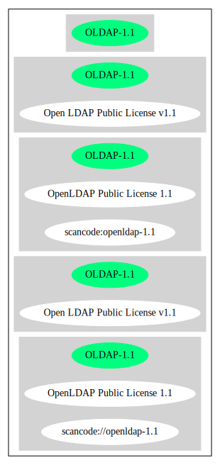

Key |
Value |
|---|---|
Fullname |
Open LDAP Public License v1.1 |
Shortname |
OLDAP-1.1 |
Rating |
Unknown, probably Stop or No-Go |
Classification |
WeakCopyleft |
Other Names:
scancode://openldap-1.1
OpenLDAP Public License 1.1
Per SPDX.org, this license was released 25 August 1998. (source: Scancode)
↓Rating is: Lead (source: BlueOak License List)
Homepage: http://www.openldap.org/devel/gitweb.cgi?p=openldap.git;a=blob;f=LICENSE;hb=806557a5ad59804ef3a44d5abfbe91d706b0791f
SPDX: http://spdx.org/licenses/OLDAP-1.1.json
SPDX: https://spdx.org/licenses/OLDAP-1.1.html
The OpenLDAP Public License
Version 1.1, 25 August 1998
Copyright 1998, The OpenLDAP Foundation.
All Rights Reserved.
Note:
This license is derived from the "Artistic License" as distributed
with the Perl Programming Language. Its terms are different from
those of the "Artistic License."
PREAMBLE
The intent of this document is to state the conditions under which a
Package may be copied, such that the Copyright Holder maintains some
semblance of artistic control over the development of the package,
while giving the users of the package the right to use and distribute
the Package in a more-or-less customary fashion, plus the right to make
reasonable modifications.
Definitions:
"Package" refers to the collection of files distributed by the
Copyright Holder, and derivatives of that collection of files
created through textual modification.
"Standard Version" refers to such a Package if it has not been
modified, or has been modified in accordance with the wishes
of the Copyright Holder.
"Copyright Holder" is whoever is named in the copyright or
copyrights for the package.
"You" is you, if you're thinking about copying or distributing
this Package.
"Reasonable copying fee" is whatever you can justify on the
basis of media cost, duplication charges, time of people involved,
and so on. (You will not be required to justify it to the
Copyright Holder, but only to the computing community at large
as a market that must bear the fee.)
"Freely Available" means that no fee is charged for the item
itself, though there may be fees involved in handling the item.
It also means that recipients of the item may redistribute it
under the same conditions they received it.
1. You may make and give away verbatim copies of the source form of the
Standard Version of this Package without restriction, provided that you
duplicate all of the original copyright notices and associated disclaimers.
2. You may apply bug fixes, portability fixes and other modifications
derived from the Public Domain or from the Copyright Holder. A Package
modified in such a way shall still be considered the Standard Version.
3. You may otherwise modify your copy of this Package in any way, provided
that you insert a prominent notice in each changed file stating how and
when you changed that file, and provided that you do at least ONE of the
following:
a) place your modifications in the Public Domain or otherwise make them
Freely Available, such as by posting said modifications to Usenet or
an equivalent medium, or placing the modifications on a major archive
site such as uunet.uu.net, or by allowing the Copyright Holder to include
your modifications in the Standard Version of the Package.
b) use the modified Package only within your corporation or organization.
c) rename any non-standard executables so the names do not conflict
with standard executables, which must also be provided, and provide
a separate manual page for each non-standard executable that clearly
documents how it differs from the Standard Version.
d) make other distribution arrangements with the Copyright Holder.
4. You may distribute the programs of this Package in object code or
executable form, provided that you do at least ONE of the following:
a) distribute a Standard Version of the executables and library files,
together with instructions (in the manual page or equivalent) on where
to get the Standard Version.
b) accompany the distribution with the machine-readable source of
the Package with your modifications.
c) accompany any non-standard executables with their corresponding
Standard Version executables, giving the non-standard executables
non-standard names, and clearly documenting the differences in manual
pages (or equivalent), together with instructions on where to get
the Standard Version.
d) make other distribution arrangements with the Copyright Holder.
5. You may charge a reasonable copying fee for any distribution of this
Package. You may charge any fee you choose for support of this Package.
You may not charge a fee for this Package itself. However,
you may distribute this Package in aggregate with other (possibly
commercial) programs as part of a larger (possibly commercial) software
distribution provided that you do not advertise this Package as a
product of your own.
6. The scripts and library files supplied as input to or produced as
output from the programs of this Package do not automatically fall
under the copyright of this Package, but belong to whomever generated
them, and may be sold commercially, and may be aggregated with this
Package.
7. C subroutines supplied by you and linked into this Package in order
to emulate subroutines and variables of the language defined by this
Package shall not be considered part of this Package, but are the
equivalent of input as in Paragraph 6, provided these subroutines do
not change the language in any way that would cause it to fail the
regression tests for the language.
8. The name of the Copyright Holder may not be used to endorse or promote
products derived from this software without specific prior written permission.
9. THIS PACKAGE IS PROVIDED "AS IS" AND WITHOUT ANY EXPRESS OR
IMPLIED WARRANTIES, INCLUDING, WITHOUT LIMITATION, THE IMPLIED
WARRANTIES OF MERCHANTIBILITY AND FITNESS FOR A PARTICULAR PURPOSE.
The End{
"__impliedNames": [
"OLDAP-1.1",
"Open LDAP Public License v1.1",
"scancode://openldap-1.1",
"OpenLDAP Public License 1.1"
],
"__impliedId": "OLDAP-1.1",
"facts": {
"SPDX": {
"isSPDXLicenseDeprecated": false,
"spdxFullName": "Open LDAP Public License v1.1",
"spdxDetailsURL": "http://spdx.org/licenses/OLDAP-1.1.json",
"_sourceURL": "https://spdx.org/licenses/OLDAP-1.1.html",
"spdxLicIsOSIApproved": false,
"spdxSeeAlso": [
"http://www.openldap.org/devel/gitweb.cgi?p=openldap.git;a=blob;f=LICENSE;hb=806557a5ad59804ef3a44d5abfbe91d706b0791f"
],
"_implications": {
"__impliedNames": [
"OLDAP-1.1",
"Open LDAP Public License v1.1"
],
"__impliedId": "OLDAP-1.1",
"__isOsiApproved": false,
"__impliedURLs": [
[
"SPDX",
"http://spdx.org/licenses/OLDAP-1.1.json"
],
[
null,
"http://www.openldap.org/devel/gitweb.cgi?p=openldap.git;a=blob;f=LICENSE;hb=806557a5ad59804ef3a44d5abfbe91d706b0791f"
]
]
},
"spdxLicenseId": "OLDAP-1.1"
},
"Scancode": {
"otherUrls": null,
"homepageUrl": "http://www.openldap.org/devel/gitweb.cgi?p=openldap.git;a=blob;f=LICENSE;hb=806557a5ad59804ef3a44d5abfbe91d706b0791f",
"shortName": "OpenLDAP Public License 1.1",
"textUrls": null,
"text": "The OpenLDAP Public License \n\nVersion 1.1, 25 August 1998 \nCopyright 1998, The OpenLDAP Foundation. \nAll Rights Reserved. \n\nNote: \nThis license is derived from the \"Artistic License\" as distributed \nwith the Perl Programming Language. Its terms are different from \nthose of the \"Artistic License.\" \n\nPREAMBLE \n\nThe intent of this document is to state the conditions under which a \nPackage may be copied, such that the Copyright Holder maintains some \nsemblance of artistic control over the development of the package, \nwhile giving the users of the package the right to use and distribute \nthe Package in a more-or-less customary fashion, plus the right to make \nreasonable modifications. \n\nDefinitions: \n\n\"Package\" refers to the collection of files distributed by the \nCopyright Holder, and derivatives of that collection of files \ncreated through textual modification. \n\n\"Standard Version\" refers to such a Package if it has not been \nmodified, or has been modified in accordance with the wishes \nof the Copyright Holder. \n\n\"Copyright Holder\" is whoever is named in the copyright or \ncopyrights for the package. \n\n\"You\" is you, if you're thinking about copying or distributing \nthis Package. \n\n\"Reasonable copying fee\" is whatever you can justify on the \nbasis of media cost, duplication charges, time of people involved, \nand so on. (You will not be required to justify it to the \nCopyright Holder, but only to the computing community at large \nas a market that must bear the fee.) \n\n\"Freely Available\" means that no fee is charged for the item \nitself, though there may be fees involved in handling the item. \nIt also means that recipients of the item may redistribute it \nunder the same conditions they received it. \n\n1. You may make and give away verbatim copies of the source form of the \nStandard Version of this Package without restriction, provided that you \nduplicate all of the original copyright notices and associated disclaimers. \n\n2. You may apply bug fixes, portability fixes and other modifications \nderived from the Public Domain or from the Copyright Holder. A Package \nmodified in such a way shall still be considered the Standard Version. \n\n3. You may otherwise modify your copy of this Package in any way, provided \nthat you insert a prominent notice in each changed file stating how and \nwhen you changed that file, and provided that you do at least ONE of the \nfollowing: \n\na) place your modifications in the Public Domain or otherwise make them \nFreely Available, such as by posting said modifications to Usenet or \nan equivalent medium, or placing the modifications on a major archive \nsite such as uunet.uu.net, or by allowing the Copyright Holder to include \nyour modifications in the Standard Version of the Package. \n\nb) use the modified Package only within your corporation or organization. \n\nc) rename any non-standard executables so the names do not conflict \nwith standard executables, which must also be provided, and provide \na separate manual page for each non-standard executable that clearly \ndocuments how it differs from the Standard Version. \n\nd) make other distribution arrangements with the Copyright Holder. \n\n4. You may distribute the programs of this Package in object code or \nexecutable form, provided that you do at least ONE of the following: \n\na) distribute a Standard Version of the executables and library files, \ntogether with instructions (in the manual page or equivalent) on where \nto get the Standard Version. \n\nb) accompany the distribution with the machine-readable source of \nthe Package with your modifications. \n\nc) accompany any non-standard executables with their corresponding \nStandard Version executables, giving the non-standard executables \nnon-standard names, and clearly documenting the differences in manual \npages (or equivalent), together with instructions on where to get \nthe Standard Version. \n\nd) make other distribution arrangements with the Copyright Holder. \n\n5. You may charge a reasonable copying fee for any distribution of this \nPackage. You may charge any fee you choose for support of this Package. \nYou may not charge a fee for this Package itself. However, \nyou may distribute this Package in aggregate with other (possibly \ncommercial) programs as part of a larger (possibly commercial) software \ndistribution provided that you do not advertise this Package as a \nproduct of your own. \n\n6. The scripts and library files supplied as input to or produced as \noutput from the programs of this Package do not automatically fall \nunder the copyright of this Package, but belong to whomever generated \nthem, and may be sold commercially, and may be aggregated with this \nPackage. \n\n7. C subroutines supplied by you and linked into this Package in order \nto emulate subroutines and variables of the language defined by this \nPackage shall not be considered part of this Package, but are the \nequivalent of input as in Paragraph 6, provided these subroutines do \nnot change the language in any way that would cause it to fail the \nregression tests for the language. \n\n8. The name of the Copyright Holder may not be used to endorse or promote \nproducts derived from this software without specific prior written permission. \n\n9. THIS PACKAGE IS PROVIDED \"AS IS\" AND WITHOUT ANY EXPRESS OR \nIMPLIED WARRANTIES, INCLUDING, WITHOUT LIMITATION, THE IMPLIED \nWARRANTIES OF MERCHANTIBILITY AND FITNESS FOR A PARTICULAR PURPOSE. \n\nThe End",
"category": "Copyleft Limited",
"osiUrl": null,
"owner": "OpenLDAP Foundation",
"_sourceURL": "https://github.com/nexB/scancode-toolkit/blob/develop/src/licensedcode/data/licenses/openldap-1.1.yml",
"key": "openldap-1.1",
"name": "OpenLDAP Public License 1.1",
"spdxId": "OLDAP-1.1",
"notes": "Per SPDX.org, this license was released 25 August 1998.",
"_implications": {
"__impliedNames": [
"scancode://openldap-1.1",
"OpenLDAP Public License 1.1",
"OLDAP-1.1"
],
"__impliedId": "OLDAP-1.1",
"__impliedJudgement": [
[
"Scancode",
{
"tag": "NeutralJudgement",
"contents": "Per SPDX.org, this license was released 25 August 1998."
}
]
],
"__impliedCopyleft": [
[
"Scancode",
"WeakCopyleft"
]
],
"__calculatedCopyleft": "WeakCopyleft",
"__impliedText": "The OpenLDAP Public License \n\nVersion 1.1, 25 August 1998 \nCopyright 1998, The OpenLDAP Foundation. \nAll Rights Reserved. \n\nNote: \nThis license is derived from the \"Artistic License\" as distributed \nwith the Perl Programming Language. Its terms are different from \nthose of the \"Artistic License.\" \n\nPREAMBLE \n\nThe intent of this document is to state the conditions under which a \nPackage may be copied, such that the Copyright Holder maintains some \nsemblance of artistic control over the development of the package, \nwhile giving the users of the package the right to use and distribute \nthe Package in a more-or-less customary fashion, plus the right to make \nreasonable modifications. \n\nDefinitions: \n\n\"Package\" refers to the collection of files distributed by the \nCopyright Holder, and derivatives of that collection of files \ncreated through textual modification. \n\n\"Standard Version\" refers to such a Package if it has not been \nmodified, or has been modified in accordance with the wishes \nof the Copyright Holder. \n\n\"Copyright Holder\" is whoever is named in the copyright or \ncopyrights for the package. \n\n\"You\" is you, if you're thinking about copying or distributing \nthis Package. \n\n\"Reasonable copying fee\" is whatever you can justify on the \nbasis of media cost, duplication charges, time of people involved, \nand so on. (You will not be required to justify it to the \nCopyright Holder, but only to the computing community at large \nas a market that must bear the fee.) \n\n\"Freely Available\" means that no fee is charged for the item \nitself, though there may be fees involved in handling the item. \nIt also means that recipients of the item may redistribute it \nunder the same conditions they received it. \n\n1. You may make and give away verbatim copies of the source form of the \nStandard Version of this Package without restriction, provided that you \nduplicate all of the original copyright notices and associated disclaimers. \n\n2. You may apply bug fixes, portability fixes and other modifications \nderived from the Public Domain or from the Copyright Holder. A Package \nmodified in such a way shall still be considered the Standard Version. \n\n3. You may otherwise modify your copy of this Package in any way, provided \nthat you insert a prominent notice in each changed file stating how and \nwhen you changed that file, and provided that you do at least ONE of the \nfollowing: \n\na) place your modifications in the Public Domain or otherwise make them \nFreely Available, such as by posting said modifications to Usenet or \nan equivalent medium, or placing the modifications on a major archive \nsite such as uunet.uu.net, or by allowing the Copyright Holder to include \nyour modifications in the Standard Version of the Package. \n\nb) use the modified Package only within your corporation or organization. \n\nc) rename any non-standard executables so the names do not conflict \nwith standard executables, which must also be provided, and provide \na separate manual page for each non-standard executable that clearly \ndocuments how it differs from the Standard Version. \n\nd) make other distribution arrangements with the Copyright Holder. \n\n4. You may distribute the programs of this Package in object code or \nexecutable form, provided that you do at least ONE of the following: \n\na) distribute a Standard Version of the executables and library files, \ntogether with instructions (in the manual page or equivalent) on where \nto get the Standard Version. \n\nb) accompany the distribution with the machine-readable source of \nthe Package with your modifications. \n\nc) accompany any non-standard executables with their corresponding \nStandard Version executables, giving the non-standard executables \nnon-standard names, and clearly documenting the differences in manual \npages (or equivalent), together with instructions on where to get \nthe Standard Version. \n\nd) make other distribution arrangements with the Copyright Holder. \n\n5. You may charge a reasonable copying fee for any distribution of this \nPackage. You may charge any fee you choose for support of this Package. \nYou may not charge a fee for this Package itself. However, \nyou may distribute this Package in aggregate with other (possibly \ncommercial) programs as part of a larger (possibly commercial) software \ndistribution provided that you do not advertise this Package as a \nproduct of your own. \n\n6. The scripts and library files supplied as input to or produced as \noutput from the programs of this Package do not automatically fall \nunder the copyright of this Package, but belong to whomever generated \nthem, and may be sold commercially, and may be aggregated with this \nPackage. \n\n7. C subroutines supplied by you and linked into this Package in order \nto emulate subroutines and variables of the language defined by this \nPackage shall not be considered part of this Package, but are the \nequivalent of input as in Paragraph 6, provided these subroutines do \nnot change the language in any way that would cause it to fail the \nregression tests for the language. \n\n8. The name of the Copyright Holder may not be used to endorse or promote \nproducts derived from this software without specific prior written permission. \n\n9. THIS PACKAGE IS PROVIDED \"AS IS\" AND WITHOUT ANY EXPRESS OR \nIMPLIED WARRANTIES, INCLUDING, WITHOUT LIMITATION, THE IMPLIED \nWARRANTIES OF MERCHANTIBILITY AND FITNESS FOR A PARTICULAR PURPOSE. \n\nThe End",
"__impliedURLs": [
[
"Homepage",
"http://www.openldap.org/devel/gitweb.cgi?p=openldap.git;a=blob;f=LICENSE;hb=806557a5ad59804ef3a44d5abfbe91d706b0791f"
]
]
}
},
"BlueOak License List": {
"BlueOakRating": "Lead",
"url": "https://spdx.org/licenses/OLDAP-1.1.html",
"isPermissive": true,
"_sourceURL": "https://blueoakcouncil.org/list",
"name": "Open LDAP Public License v1.1",
"id": "OLDAP-1.1",
"_implications": {
"__impliedNames": [
"OLDAP-1.1"
],
"__impliedJudgement": [
[
"BlueOak License List",
{
"tag": "NegativeJudgement",
"contents": "Rating is: Lead"
}
]
],
"__impliedCopyleft": [
[
"BlueOak License List",
"NoCopyleft"
]
],
"__calculatedCopyleft": "NoCopyleft",
"__impliedURLs": [
[
"SPDX",
"https://spdx.org/licenses/OLDAP-1.1.html"
]
]
}
}
},
"__impliedJudgement": [
[
"BlueOak License List",
{
"tag": "NegativeJudgement",
"contents": "Rating is: Lead"
}
],
[
"Scancode",
{
"tag": "NeutralJudgement",
"contents": "Per SPDX.org, this license was released 25 August 1998."
}
]
],
"__impliedCopyleft": [
[
"BlueOak License List",
"NoCopyleft"
],
[
"Scancode",
"WeakCopyleft"
]
],
"__calculatedCopyleft": "WeakCopyleft",
"__isOsiApproved": false,
"__impliedText": "The OpenLDAP Public License \n\nVersion 1.1, 25 August 1998 \nCopyright 1998, The OpenLDAP Foundation. \nAll Rights Reserved. \n\nNote: \nThis license is derived from the \"Artistic License\" as distributed \nwith the Perl Programming Language. Its terms are different from \nthose of the \"Artistic License.\" \n\nPREAMBLE \n\nThe intent of this document is to state the conditions under which a \nPackage may be copied, such that the Copyright Holder maintains some \nsemblance of artistic control over the development of the package, \nwhile giving the users of the package the right to use and distribute \nthe Package in a more-or-less customary fashion, plus the right to make \nreasonable modifications. \n\nDefinitions: \n\n\"Package\" refers to the collection of files distributed by the \nCopyright Holder, and derivatives of that collection of files \ncreated through textual modification. \n\n\"Standard Version\" refers to such a Package if it has not been \nmodified, or has been modified in accordance with the wishes \nof the Copyright Holder. \n\n\"Copyright Holder\" is whoever is named in the copyright or \ncopyrights for the package. \n\n\"You\" is you, if you're thinking about copying or distributing \nthis Package. \n\n\"Reasonable copying fee\" is whatever you can justify on the \nbasis of media cost, duplication charges, time of people involved, \nand so on. (You will not be required to justify it to the \nCopyright Holder, but only to the computing community at large \nas a market that must bear the fee.) \n\n\"Freely Available\" means that no fee is charged for the item \nitself, though there may be fees involved in handling the item. \nIt also means that recipients of the item may redistribute it \nunder the same conditions they received it. \n\n1. You may make and give away verbatim copies of the source form of the \nStandard Version of this Package without restriction, provided that you \nduplicate all of the original copyright notices and associated disclaimers. \n\n2. You may apply bug fixes, portability fixes and other modifications \nderived from the Public Domain or from the Copyright Holder. A Package \nmodified in such a way shall still be considered the Standard Version. \n\n3. You may otherwise modify your copy of this Package in any way, provided \nthat you insert a prominent notice in each changed file stating how and \nwhen you changed that file, and provided that you do at least ONE of the \nfollowing: \n\na) place your modifications in the Public Domain or otherwise make them \nFreely Available, such as by posting said modifications to Usenet or \nan equivalent medium, or placing the modifications on a major archive \nsite such as uunet.uu.net, or by allowing the Copyright Holder to include \nyour modifications in the Standard Version of the Package. \n\nb) use the modified Package only within your corporation or organization. \n\nc) rename any non-standard executables so the names do not conflict \nwith standard executables, which must also be provided, and provide \na separate manual page for each non-standard executable that clearly \ndocuments how it differs from the Standard Version. \n\nd) make other distribution arrangements with the Copyright Holder. \n\n4. You may distribute the programs of this Package in object code or \nexecutable form, provided that you do at least ONE of the following: \n\na) distribute a Standard Version of the executables and library files, \ntogether with instructions (in the manual page or equivalent) on where \nto get the Standard Version. \n\nb) accompany the distribution with the machine-readable source of \nthe Package with your modifications. \n\nc) accompany any non-standard executables with their corresponding \nStandard Version executables, giving the non-standard executables \nnon-standard names, and clearly documenting the differences in manual \npages (or equivalent), together with instructions on where to get \nthe Standard Version. \n\nd) make other distribution arrangements with the Copyright Holder. \n\n5. You may charge a reasonable copying fee for any distribution of this \nPackage. You may charge any fee you choose for support of this Package. \nYou may not charge a fee for this Package itself. However, \nyou may distribute this Package in aggregate with other (possibly \ncommercial) programs as part of a larger (possibly commercial) software \ndistribution provided that you do not advertise this Package as a \nproduct of your own. \n\n6. The scripts and library files supplied as input to or produced as \noutput from the programs of this Package do not automatically fall \nunder the copyright of this Package, but belong to whomever generated \nthem, and may be sold commercially, and may be aggregated with this \nPackage. \n\n7. C subroutines supplied by you and linked into this Package in order \nto emulate subroutines and variables of the language defined by this \nPackage shall not be considered part of this Package, but are the \nequivalent of input as in Paragraph 6, provided these subroutines do \nnot change the language in any way that would cause it to fail the \nregression tests for the language. \n\n8. The name of the Copyright Holder may not be used to endorse or promote \nproducts derived from this software without specific prior written permission. \n\n9. THIS PACKAGE IS PROVIDED \"AS IS\" AND WITHOUT ANY EXPRESS OR \nIMPLIED WARRANTIES, INCLUDING, WITHOUT LIMITATION, THE IMPLIED \nWARRANTIES OF MERCHANTIBILITY AND FITNESS FOR A PARTICULAR PURPOSE. \n\nThe End",
"__impliedURLs": [
[
"SPDX",
"http://spdx.org/licenses/OLDAP-1.1.json"
],
[
null,
"http://www.openldap.org/devel/gitweb.cgi?p=openldap.git;a=blob;f=LICENSE;hb=806557a5ad59804ef3a44d5abfbe91d706b0791f"
],
[
"SPDX",
"https://spdx.org/licenses/OLDAP-1.1.html"
],
[
"Homepage",
"http://www.openldap.org/devel/gitweb.cgi?p=openldap.git;a=blob;f=LICENSE;hb=806557a5ad59804ef3a44d5abfbe91d706b0791f"
]
]
}